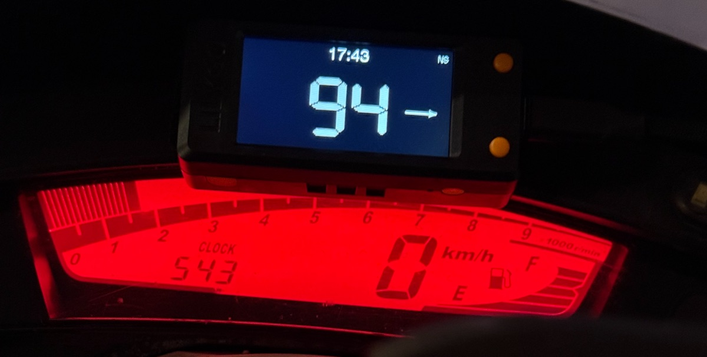
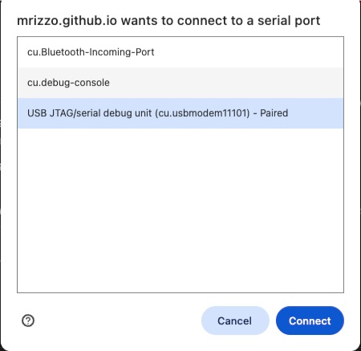
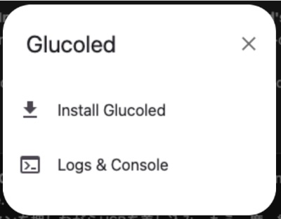
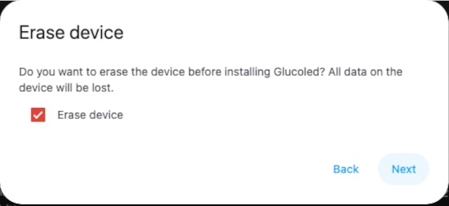
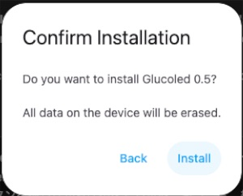
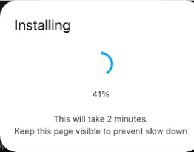
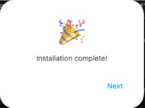
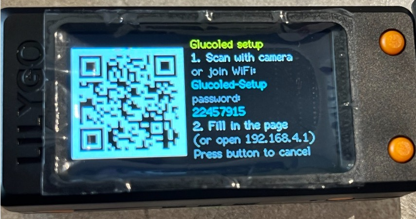
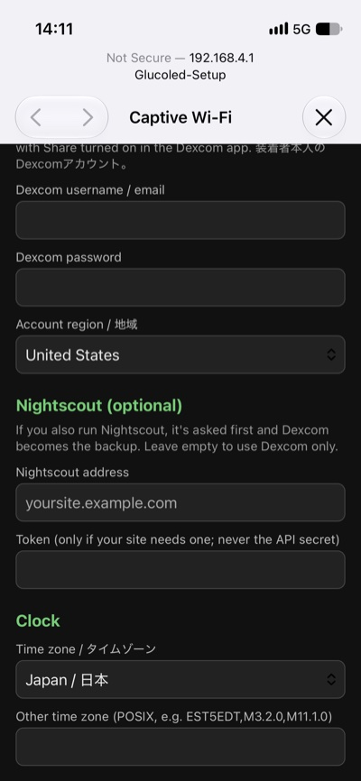
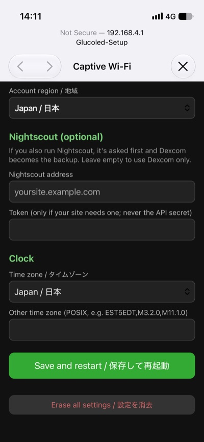

Glucoled installer
For diabetics who just want to see their blood sugar at a glance. 血糖値をひと目で確認したい糖尿病の方へ。
An affordable HUD for your blood sugar: on the bike, in the car, at your desk, by your bed. No unlocking your phone, no turning your wrist. 手頃な価格の血糖値ヘッドアップディスプレイ。バイク、車、デスク、枕元に。スマホを開かなくても、ウォッチを見なくても大丈夫。
A tiny glucose display: just the number and the trend arrow, from Dexcom Share (including Japanese accounts) or Nightscout. Dexcom Share（日本のアカウント対応）またはNightscoutから、血糖値と矢印だけを表示する小さなディスプレイ。

1. You need 準備するもの
- A LilyGO T-Display S3 (the plain 1.9" version, not AMOLED/Pro/Long). The one with the plastic shell is nicest. Buy from the LilyGO store. LilyGO T-Display S3（1.9インチの通常版。ケース付きがおすすめ）LilyGO公式ストア
- A USB-C data cable (charge-only cables won't work). データ通信できるUSB-Cケーブル
- A computer with Chrome or Edge (Mac, Windows, Linux). Safari and phones can't install. ChromeかEdgeが使えるパソコン（Safari・スマホは不可）
- Your Dexcom login: the email and password of the person wearing the sensor, with Share on in the Dexcom app. センサー装着者本人のDexcomのメールとパスワード（Dexcomアプリで「共有」をオン）
Also works on the ideaspark ESP32 1.9" board. Source code and details.
2. Install (on the computer) インストール（パソコンで）
Plug the board into the computer with the USB cable, then click: ボードをUSBでパソコンにつないで、下のボタンを押す：
このブラウザは使えません。パソコンのChromeかEdgeで開いてください。 Installing needs a secure page (https).
- Pick the board and click Connect. Click the line that says
USB JTAG/serial debug unit(orusbmodem…/usbserial…), then Connect. Not "Bluetooth" or "debug-console". 「USB JTAG/serial debug unit」の行をクリックして「接続」。BluetoothやDebug-consoleではありません。
- If you see a menu, click Install Glucoled. (It appears when the board already has software on it.) メニューが出たら「Install Glucoled」をクリック。

- Leave "Erase device" ticked and click Next. 「Erase device」にチェックのまま「Next」。

- Click Install. 「Install」をクリック。

- Wait about 2 minutes. Keep this page in front and don't unplug the board. 約2分待ちます。このページを表示したまま、ケーブルを抜かないでください。

- Done! Click Next and close the window. The board restarts and shows a QR code. 完了！「Next」を押して閉じます。ボードが再起動してQRコードが表示されます。

「Failed to open serial port」：他のタブやアプリがボードを使っています。閉じてからUSBを抜き差しして再試行。
一覧に出ない：別のケーブルを試す。だめなら下のBOOTボタンを押しながらUSBを差し込み、再試行。終わったら側面のリセットボタン。
3. Set it up (on your phone) 設定（スマホで）
The board can now be unplugged from the computer and powered from any USB charger. パソコンから外して、USB充電器につないでもOKです。
- Scan the QR code on the board with the phone camera and tap Join "Glucoled-Setup". ボードのQRコードをカメラで読み取り、「Glucoled-Setup」に接続。

- A setup page opens. Type your WiFi name and password (home, and your phone's hotspot if you want it in the car). If the page doesn't open, open
192.168.4.1in the browser. 設定画面が開きます。WiFi名とパスワードを入力（自宅、車で使うならスマホのテザリングも）。開かない場合はブラウザで192.168.4.1。
- Enter the Dexcom email and password, choose the region (Japan for Japanese accounts), then tap Save and restart. Leave Nightscout empty if you don't use it. Dexcomのメールとパスワードを入力、地域は「Japan / 日本」を選んで「保存して再起動」。Nightscoutは空欄でOK。

- Your number appears within about 20 seconds. Reconnect your phone to your normal WiFi. 約20秒で血糖値が表示されます。スマホのWiFiを元に戻してください。
WiFi名・パスワードの間違いか5GHzです。下のボタンを6秒長押しで設定し直し。iPhoneのテザリングは「互換性を優先」をオン。
「--」表示：Dexcomのメール・パスワード・地域、アプリの共有設定を確認。ボタン6秒長押しで修正。
Good to know 注意
- Not a medical device. Don't make treatment decisions from it; use your CGM app and its alarms. 医療機器ではありません。治療の判断にはCGMアプリを使ってください。
- Your Dexcom password is stored on the board only. It uses Dexcom's unofficial Share API, which could change. パスワードはボード内にのみ保存されます。
- To change settings later, hold the lower button for 6 seconds. 設定変更：下のボタンを6秒長押し。
Glucoled is free. If it helps you, please consider a donation to Breakthrough T1D (formerly JDRF), or just say thanks. Glucoledは無料です。役に立ったら、日本IDDMネットワークへの寄付をご検討いただくか、ひと言お礼をいただけたらうれしいです。